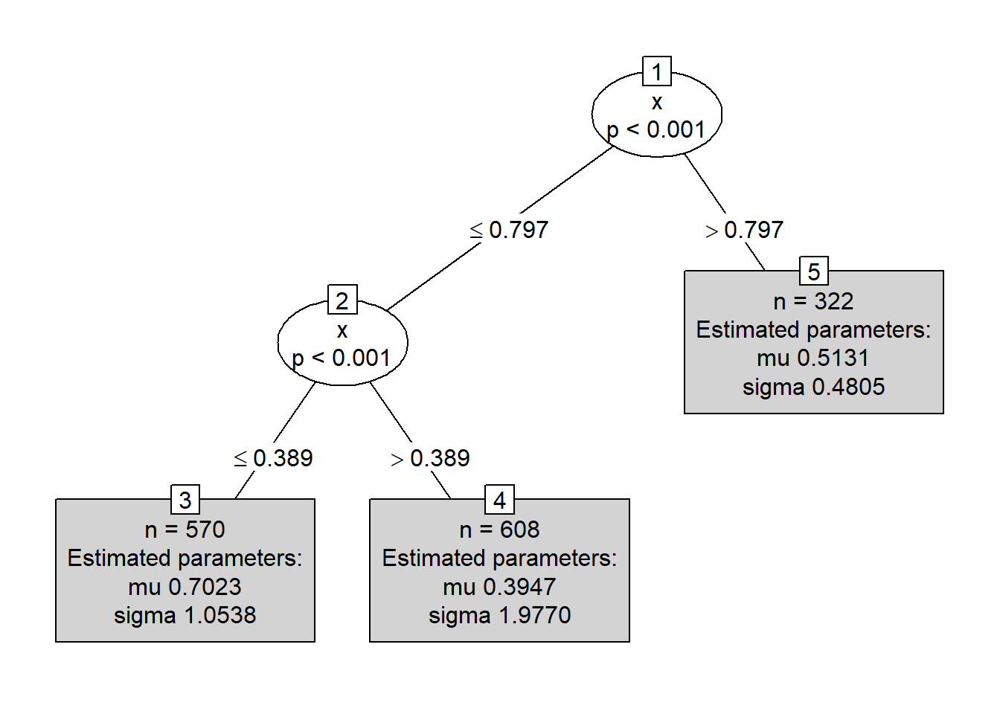

3 Árboles de regresión distribucionales
Los árboles de regresión distribucionales fueron propuestos en Schlosser et al. (2019) y Schlosser (2020). Esta nueva propuesta unifica dos aproximaciones de modelación:
- Data modeling.
- Algorithmic modeling.
Abajo una comparación entre un árbol de regresión y un árbol de regresión distribucional.
Paquete disttree
distree propuesto por Schlosser et al. (2021) es un paquete de R para ajustar árboles y bosques de regresión distribucionales basado en la estimación de máxima verosimilitud de parámetros para familias de distribución específicas. Para instalar el paquete puedes usar el siguiente código.
Para crear un árbol de regresión distribucional se usa la función disttree que tiene la siguiente estructura.
disttree(formula, data, subset, na.action = na.pass, weights, offset,
cluster, family = NO(), control = disttree_control(...),
converged = NULL, scores = NULL, doFit = TRUE, ...)El argumento family se utiliza para indicar la distribución estadística que se asume para la variable respuesta \(Y\). Se puede elegir cualquier distribución de gamlss de Stasinopoulos and Rigby (2024) o cualquier distribución de los paquetes RelDists de Hernandez et al. (2022), RealDists de (R-RealDists?) y DiscreteDists de Hernandez-Barajas et al. (2024).
Una pregunta frecuente es ¿cómo selecciono la distribución que mejor explica el patrón de mi variable respuesta \(Y\)?
Ejemplo
Este ejemplo está basado en la figura 1.2 de la disertación de Schlosser (2020). Aquí vamos a tener una variable respuesta \(Y\) con distribución normal pero que depende de la variable auxiliar \(X\).
\[\begin{equation*} Y = \begin{cases} N(\mu=5, \sigma=1) \, \text{si $x < 0.4$,} \\ N(\mu=12, \sigma=2) \, \text{si $0.4 \leq x \leq 0.8$,} \\ N(\mu=0, \sigma=0.5) \, \text{si $x > 0.8$}. \end{cases} \end{equation*}\]
El siguiente código sirve para simular los datos.
n <- 500
set.seed(12345)
{
x <- runif(n=n)
y <- numeric(n)
y[x < 0.4] <- rnorm(n=sum(x < 0.4), mean=5, sd=1)
y[x >+ 0.4 & x < 0.8] <- rnorm(n=sum(x >+ 0.4 & x < 0.8), mean=12, sd=2)
y[x >= 0.8] <- rnorm(n=sum(x >= 0.8), mean=0, sd=0.5)
}
datos <- data.frame(y=y, x=x)
plot(x=x, y=y, ylim=c(-5, 20))Vamos ahora a crear el árbol distribucional con family=NO.
¿Cuál será el valor estimado de \(Y\) para tres nuevos objetos que tiene valor de \(x=0.35\), \(x=0.47\) y \(x=0.89\) respectivamente?
new_data <- data.frame(x=c(0.35, 0.47, 0.89))
predicciones <- predict(mod, newdata=new_data)
predicciones## mu sigma
## 1 5.06589704 0.9170597
## 2 12.03236756 1.9684436
## 3 0.02094238 0.5654369Ejemplo
Este ejemplo se parece el ejemplo inicial, sólo que aquí la variable respuesta \(Y\) va a tener distribución FWE (Flexible Weibull Extension) y vamos a construir tres árboles distribucionales con familia NO, FWE y WEI. El objetivo es saber si disttree logra indicarnos cuál árbol distribucional es el más apropiado.
El modelo del cuál vamos a generar los datos es el siguiente:
\[\begin{equation*} Y = \begin{cases} FWE(\mu=0.7, \sigma=1) \, \text{si $x < 0.4$,} \\ FWE(\mu=0.4, \sigma=2) \, \text{si $0.4 \leq x \leq 0.8$,} \\ FWE(\mu=0.5, \sigma=0.5) \, \text{si $x > 0.8$}. \end{cases} \end{equation*}\]
El código para simular los datos es el siguiente:
library(RelDists) # Para usar la distribucion FWE
n <- 1500
set.seed(12378)
{
x <- runif(n=n)
y <- numeric(n)
y[x < 0.4] <- rFWE(n=sum(x < 0.4), mu=0.7, sigma=1)
y[x >+ 0.4 & x < 0.8] <- rFWE(n=sum(x > 0.4 & x < 0.8), mu=0.4, sigma=2)
y[x >= 0.8] <- rFWE(n=sum(x >= 0.8), mu=0.5, sigma=0.5)
}
datos <- data.frame(y=y, x=x)
plot(x=x, y=y)Ahora vamos a entrenar los tres modelos.
## Distributional regression tree (Normal Distribution)
##
## Model formula:
## y ~ x
##
## Fitted party:
## [1] root
## | [2] x <= 0.796
## | | [3] x <= 0.39609: n = 580
## | | mu sigma
## | | 1.1054738 0.5975482
## | | [4] x > 0.39609: n = 597
## | | mu sigma
## | | 1.992311 1.070787
## | [5] x > 0.796: n = 323
## | mu sigma
## | 0.9873984 0.7654727
##
## Number of inner nodes: 2
## Number of terminal nodes: 3
## Number of parameters per node: 2
## Objective function (negative log-likelihood): 1784.259## Distributional regression tree (Flexible Weibull Extension Distribution)
##
## Model formula:
## y ~ x
##
## Fitted party:
## [1] root
## | [2] x <= 0.7967
## | | [3] x <= 0.3891: n = 570
## | | mu sigma
## | | 0.7022919 1.0537549
## | | [4] x > 0.3891: n = 608
## | | mu sigma
## | | 0.3946878 1.9770320
## | [5] x > 0.7967: n = 322
## | mu sigma
## | 0.5131012 0.4805061
##
## Number of inner nodes: 2
## Number of terminal nodes: 3
## Number of parameters per node: 2
## Objective function (negative log-likelihood): 1569.568## Distributional regression tree (Weibull Distribution)
##
## Model formula:
## y ~ x
##
## Fitted party:
## [1] root
## | [2] x <= 0.796
## | | [3] x <= 0.3891: n = 570
## | | mu sigma
## | | 1.245303 1.956514
## | | [4] x > 0.3891: n = 607
## | | mu sigma
## | | 2.247237 1.983420
## | [5] x > 0.796: n = 323
## | mu sigma
## | 1.075082 1.316364
##
## Number of inner nodes: 2
## Number of terminal nodes: 3
## Number of parameters per node: 2
## Objective function (negative log-likelihood): 1614.687En el resumen de cada modelo podemos ver al final el valor de \(-logLik\), el modelo más apropiado es aquel que tenga el menor valor. Al comparar los indicadores vemos que el modelo mod2 que asume FWE como distribución para \(Y\) es el que tiene el mejor indicador.

Los resultados del árbol anterior coinciden con el modelo para los datos simulados.
\[\begin{equation*} Y = \begin{cases} FWE(\mu=0.7, \sigma=1) \, \text{si $x < 0.4$,} \\ FWE(\mu=0.4, \sigma=2) \, \text{si $0.4 \leq x \leq 0.8$,} \\ FWE(\mu=0.5, \sigma=0.5) \, \text{si $x > 0.8$}. \end{cases} \end{equation*}\]